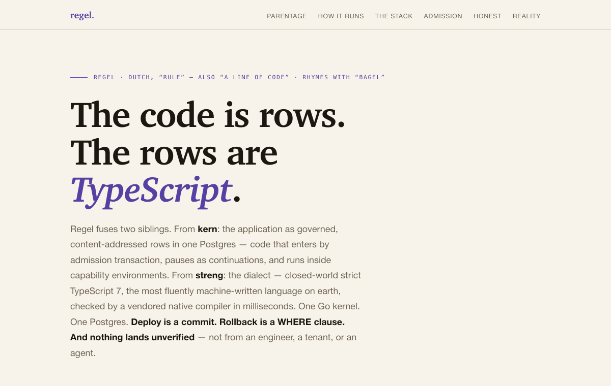

Shipped01.01 · Foundations
regel
What if deploying were a commit, and rolling back were a WHERE clause?
A Go kernel runs strict-TypeScript apps admitted as content-addressed Postgres rows. Deploy is a commit; rollback is an as-of WHERE clause — and nothing lands unverified.
GoTypeScriptPostgres